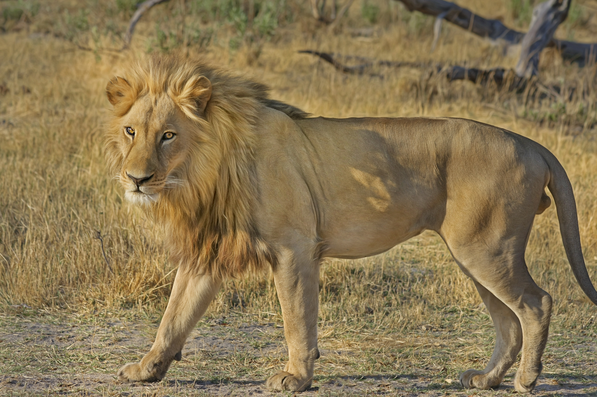
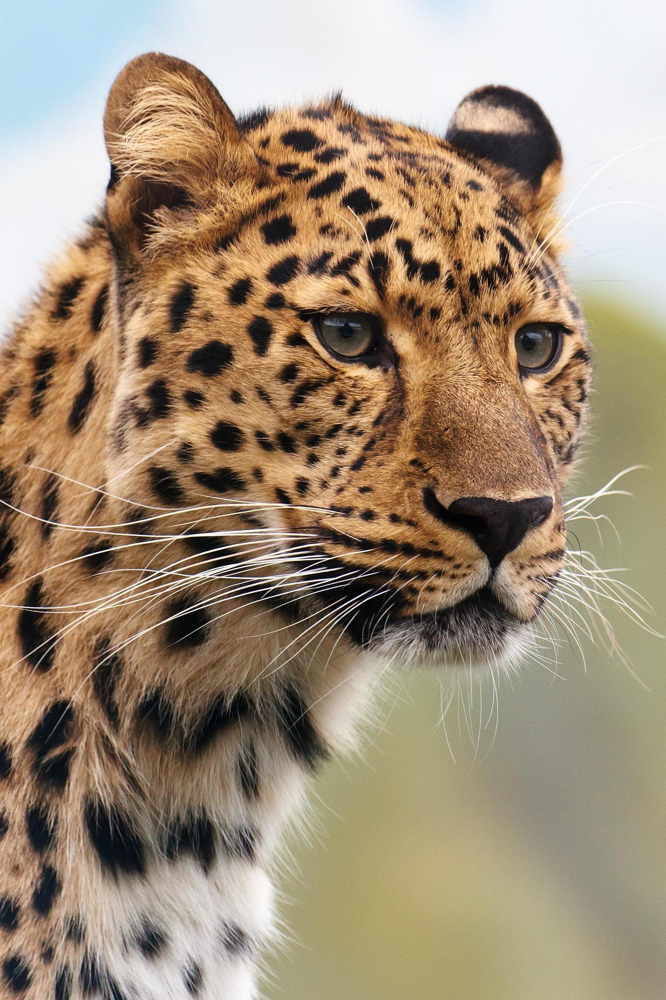
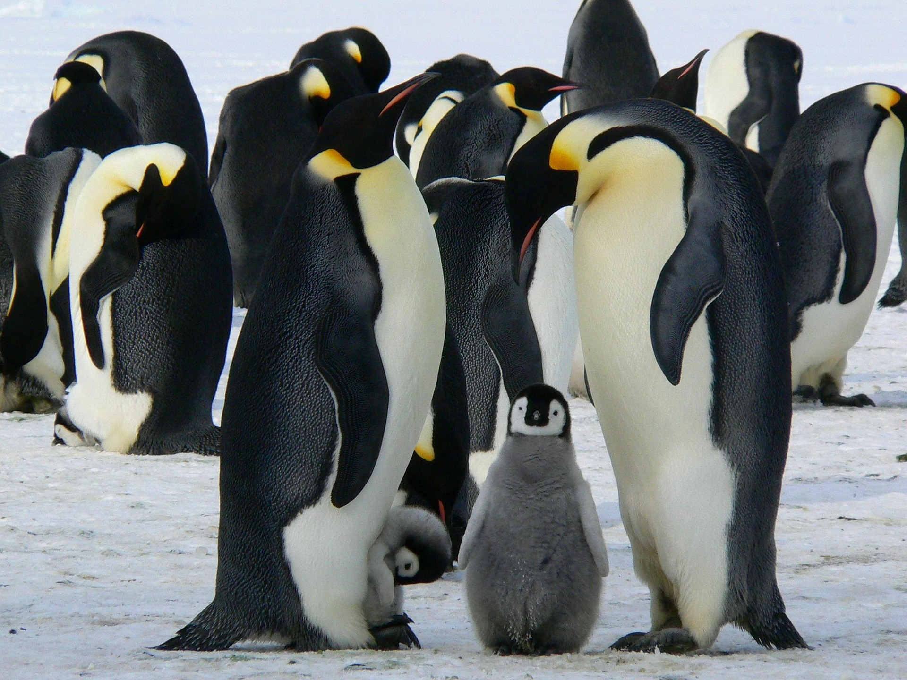
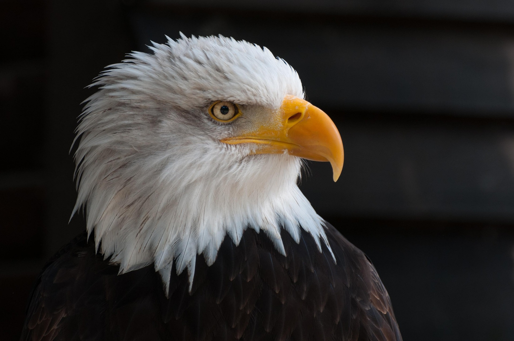
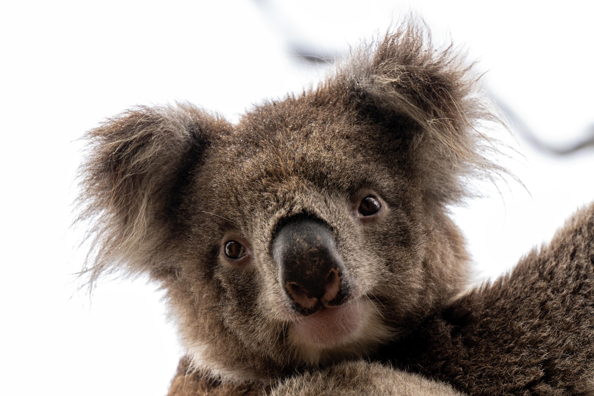

1. sir
- Yaşayış yeri: Afrika savannaları və Hindistan
- Çəkisi: Erkəklər 190-250 kq
Şirlər pişikkimilər fəsiləsinin sosial qruplar ("prayd") halında yaşayan yeganə nümayəndələridir. Erkək şirin nəriltisi 8 kilometr uzaqdan eşidilə bilər.

2. fil
- Yaşayış yeri: Afrika savannaları və meşələri
Afrika fili yer üzündə yaşayan ən böyük quru heyvanıdır. Xortumlarında 40 mindən çox əzələ var.

3. gepard
- Maksimal sürət: Saatda 110-120 km
Gepard quruda yaşayan ən sürətli canlıdır. Cəmi 3 saniyədə 100 km/saat sürətə çatır.
.jpg)
4. delfin (1)
- Yaşayış yeri: Dünya okeanı
Exolokasiya (səs dalğaları) vasitəsilə ünsiyyət qururlar və yatarkən beyinlərinin yalnız yarısını söndürürlər.

5. Zürafə
- Boyu: 4.5 - 6 metr
Planetin ən hündür heyvanıdır. Boyun fəqərələrinin sayı insanlardakı kimi cəmi 7 ədəddir.

6. Pinqvin
- Yaşayış yeri: Antarktida
Suda saatda 35 kilometr sürətlə üzə bilirlər və su altında 20 dəqiqədən çox nəfəs almadan qalırlar.

7. Qartal
- Qanad açıqlığı: 2 metrə qədər
Görmə itiliyi insanınkından 4-5 dəfə güclüdür. 3 kilometr hündürlükdən yerdəki kiçik ovu görə bilirlər.

8. Koala
- Yuxu müddəti: Gündə 18-22 saat
Barmaq izləri insan barmaq izlərinə o qədər bənzəyir ki, hətta mikroskop altında belə ayırd etmək çətindir.

9. Balina
- Çəkisi: 150 - 180 ton
Yer üzündə indiyə qədər yaşamış ən nəhəng canlıdır. Ürəyi kiçik bir avtomobil ölçüsündədir.